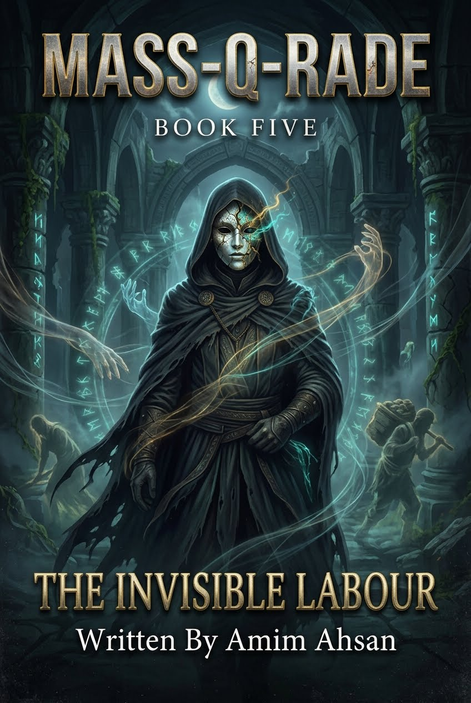
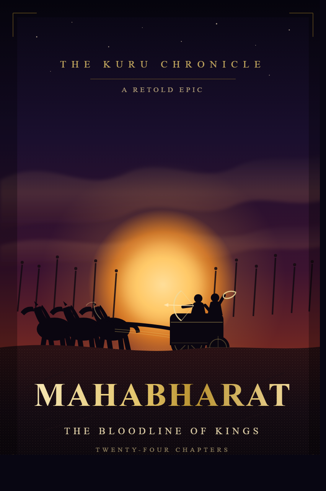
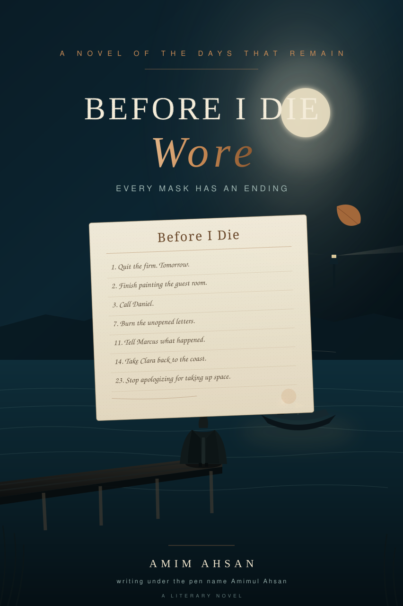
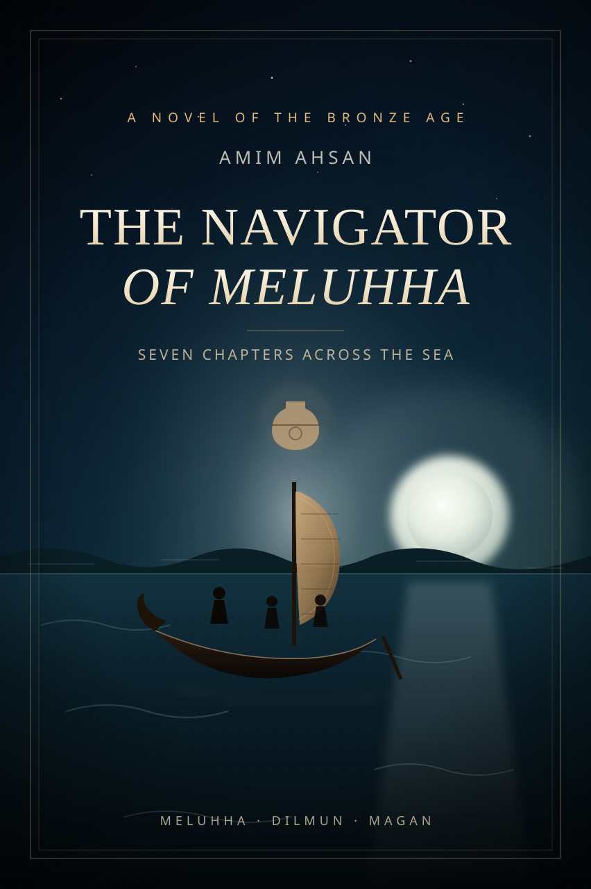
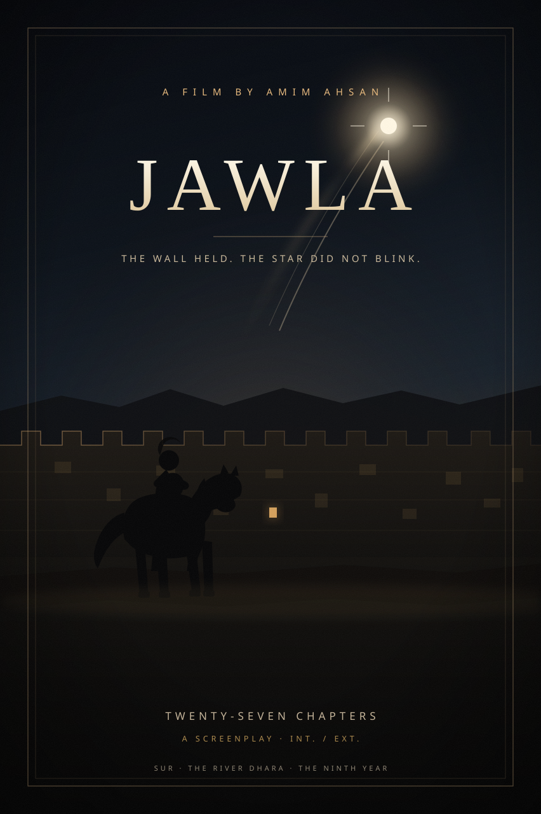
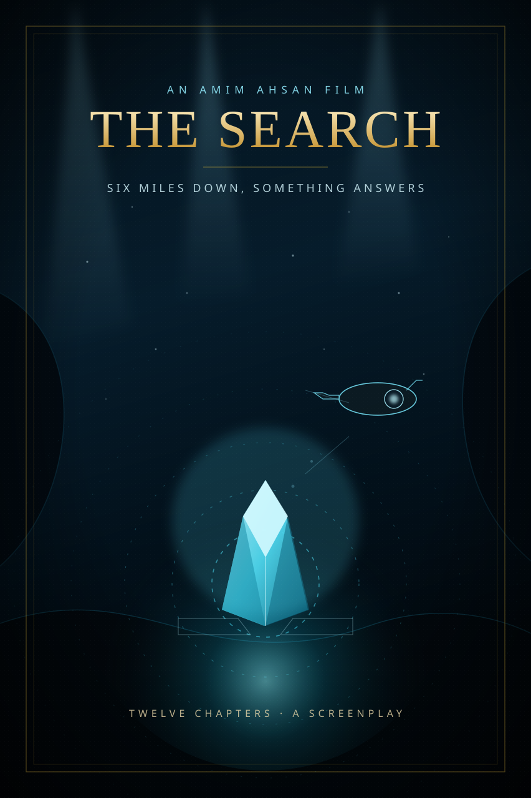
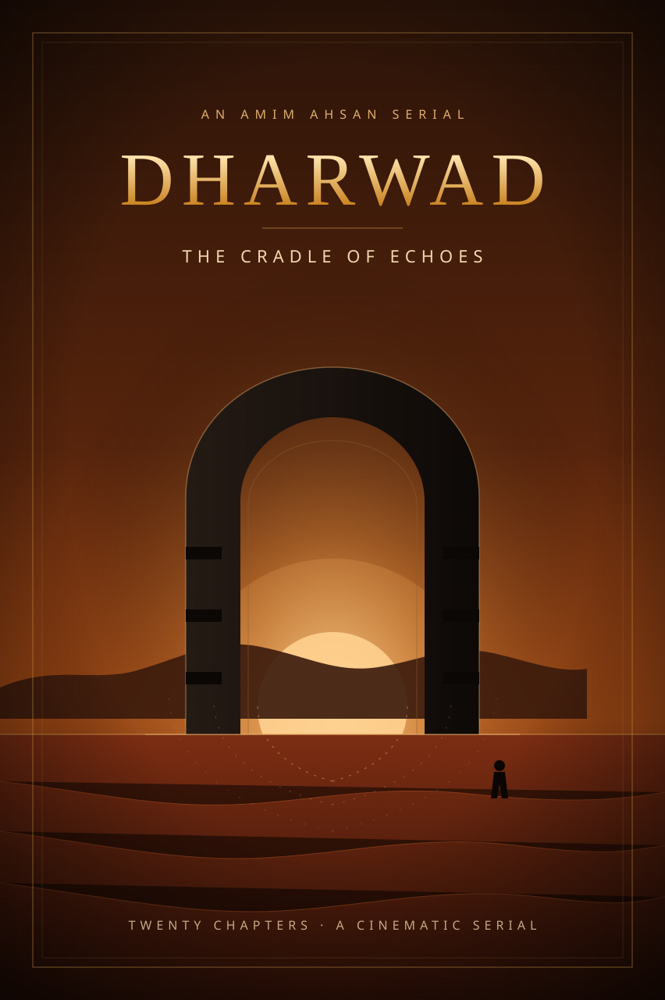
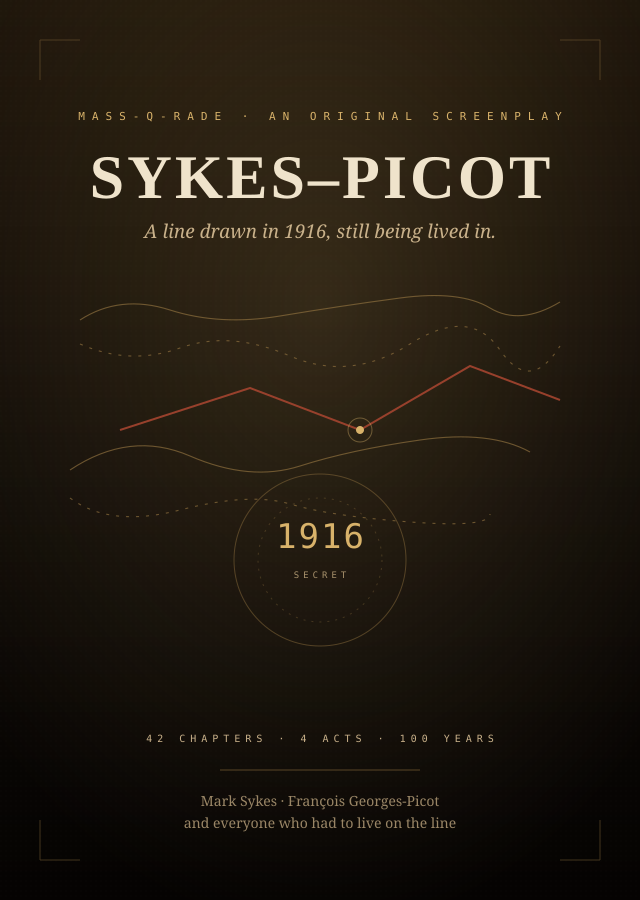

AMIM AHSAN
Author • Scriptwriter • Digital Philosopher
Crafting psychological fiction, speculative realism, eco-dystopian futures, and philosophical reflections under the pen name Amimul Ahsan.

"Stories are mirrors where the human psyche and cosmic uncertainties meet."
— Amim AhsanCrafting Realities Beyond Conventional Bounds
Amim Ahsan (publishing under the pen name Amimul Ahsan) is a contemporary author, scriptwriter, and story craftsman known for weaving intricate narratives that bridge psychological fiction, speculative realism, and eco-dystopian philosophy.
From the gripping mystery dynamics in series like Mass-Q-Rade and the suspenseful storytelling of the Joborde Series, to lighthearted satire in Messrs Jhamela Kini and poetic existentialism in Let's Never Die, his works traverse multiple literary genres with crisp nuance.
In addition to long-form fiction, Amim engages in philosophical commentary through his intellectual digital platform The Bengali Philosopher, curating thought pieces, video essays, and literary dissertations aimed at exploring human consciousness, environmental ethics, and modern existential paradoxes.
Books & Literary Works
Explore published books, ongoing series, standalone novels, and analytical literary essays—all presented in English.
Mass-Q-Rade
Volumes 1 - 15
A high-stakes mystery narrative probing social facades, cyber anonymity, and hidden identities in a hyper-connected world.
The Invisible Labour
Mass-Q-Rade · Book 5

Worker 9104-Li is the most compliant man in the Suzhou Megafactory — until the state schedules his liquidation and absolute obedience turns into absolute rebellion.
Joborde
The Joborde Series
A compelling story exploring the delicate tension between existential choices and societal pressures in modern life.

Messrs Jhamela Kini
Trouble Traders Co. · Reed Books
A Dhaka winter novel of love, work and the trouble people buy from each other — told through one woman's birthday, one writer's stories, and one very long night.

A poignant story on memory, human mortality, and how storytelling creates a quiet form of immortality.
Spring's Breath
Basanter Nihshwas
A lyrical novel examining youth, seasonal transformations, and silent emotional awakenings across urban landscapes.
The Drowned Fisherman
Mass-Q-Rade · Book 6

After twelve years of silent compliance paying illegal fines to the Aegis Marine Mining Consortium, Miguel Santos' world changes when a nanotech interface connects directly into his bloodstream. Gills form beneath his skin, his daughter Maya is cured of heavy-metal poisoning, and he becomes an apex entity in the deep.
The Ghost Journalist
Mass-Q-Rade · Book 8

Eleven years of obedient bylines end with one press of the backspace key. Carlos Mendes wipes a senator's stolen transport budget — and wakes to find twenty thousand words of unredacted dossiers in his own hand, a byline nobody can arrest, and a national master feed waiting in a basement.
The Erased Teacher
Mass-Q-Rade · Book 7
Twenty-four years of silent service meet a single grey sheet of paper. Directorate Order 44 suspends the rural curriculum and turns Amara Okonkwo's classroom into a grain store — until the erased teacher's chalk begins to answer to something three hundred kilometres above the Sahara.
The Exact Man
Mass-Q-Rade · Book 14

Josiah Parsons Cooke has weighed the elements to a fifth decimal for thirty years. Then a sample that should not exist returns the same impossible digit eleven times, and something inside the instrument offers a careful man the end of doubt. Ten characters, ten chapters, and a balance that begins to keep its own records.
Mahabharat
The Bloodline of Kings

The river, the vow, the loaded dice and the field of bones. The Kuru epic retold in full — from Ganga's eighth son to the last dog at the gates of heaven, and every impossible choice in between.
Palm Leaf Whistle
Illustrated Story

Palm-leaf whistles, a market road at sunset, and a barefoot childhood that keeps its music in handmade things.
The Dictator Corridor
A Novel · 52 Chapters

A hunting reserve becomes a dictator's private estate, a herd becomes a number nobody is allowed to check, and the last tigress in the valley walks out of a fire in front of the world. Fifty-two chapters on fear, fire, and a warden who keeps counting.
Before I Die Wore
A Novel · 34 Chapters

Six weeks to live, a marriage built on careful silences, and a father whose quiet sacrifice he spent four years misunderstanding. Julian Mercer leaves a Madison Avenue law firm with a list of thirty-four unfinished truths and goes looking for the life he thought he had built.
The Men Behind A Desire Women
A Novel · 35 Chapters

A hungry student sells his confession for ten percent, then learns that whoever controls the paper controls the truth. A novel of Dhaka's presses, a marriage held together by ledgers, and the long walk back from an empire to a sentence that is honestly his.
The Fire of Future
A Research Book · 17 Chapters

Sunlight turned into chemistry, hydrogen carried across oceans, batteries holding the evening, reactors small enough to ship, and a fusion reaction seventy years in the making. Seventeen chapters on the fuels that come after oil — and what each one costs.
Forest To Ocean
Eco-Discourse & Future Essays
Analytical treatises examining climate ethics, ecological balance, and digital era sustainability.

Middle Class
Love, Rain · Reed Books
Seven chapters of Dhaka spring: a wedding, a rainstorm, a father who marries again, and a woman asking someone to get wet with her.
The Last Word
Ten Parts · Collected Tales

Dream-keepers and time travellers, enchanted forests and clockwork gardens — a collection of short stories gathered in ten parts, told in full on the site.
The Navigator of Meluhha
A Novel · 7 Chapters

Five thousand years ago a Meluhhan sailor takes one last cargo across the sea — a manifest he cannot read, a river with five mouths, and a jar he was told not to open. Seven chapters to the end of a journey he did not know he had begun.
3 Friends
The Twilight Trinity of F.R. Hall

Three roommates at Dhaka University — Amim, Alich and Farhad — from the neem trees of F.R. Hall to the Nobel stage in Stockholm.
Exploring Philosophy & Human Consciousness
Through digital videos, written essays, and theoretical dissertations, Amim Ahsan analyzes the intersection of modern technology, existential dread, environmental ethics, and classical philosophical paradigms.
Every poison has a green alternative.
The ethic running under the eco-dystopian novels, made practical. Green World Philosophy asks one question of every object we touch — can this need be met while causing less harm? — then goes looking for the answer: the cleaner, the softer bed, the unfelled tree, the routine that lets a person sleep without a pill.
- Premise Care is a form of knowledge.
- Method Research, test, improve, share — never preach.
- Scope From poison and plastic to sleep itself.
Living philosophy
Green is not a colour. It is a responsibility.
Exploring Philosophy & Human Consciousness
The How I Survived channel — long conversations about what keeps a person standing.
Philosophy does not live in libraries. It lives in the night you could not sleep, the job that broke you, the country that let you down, the love you forgave anyway. On How I Survived, we take those nights seriously — and talk them through in plain language.
Channel Details
- Channel
- How I Survived
- Host
- Amim Ahsan
- Language
- English & Bangla
- Format
- Talks & readings
What We Say There
- On survival — what it actually takes to keep going when the systems around you were never built for you.
- On consciousness — memory, fear, identity, and the stories we tell to stay whole.
- On philosophy — the ideas behind the books, unpacked with no gatekeeping and no jargon.
youtube.com/@HowISurvivedShow

JAWLA
The wall held. The star did not blink.
A king who would rather write than rule, a queen who keeps the only honest record of the war, and a black horse at a gate that must hold for one more night. Twenty-seven chapters — a full shooting script with camera, roll, costume and environment noted for every scene.

THE SEARCH
Six miles down, something answers.
A disgraced cryptographer intercepts a forty-hertz pulse from the floor of the Mariana Trench. What she finds beneath it is an honest witness that has been writing down everything the world has done in secret — and a director who will sink the truth to keep it buried. Twelve chapters, four operatives, and a descent nobody is expected to survive.

DHARWAD
The cradle of echoes. The singer becomes the soil.
A young archivist steps off a state bus into the red-earth morning of Dharwad with a blank notebook and a borrowed recorder. Basalt arches, a lake that keeps sound, a cassette shop that trades in old frequencies — and a town that seems to have been waiting for someone to write it down. Twenty chapters, sixty-two scenes, one unbroken line.

THE SILENCE ENGINE
A machine that kills no one, and a city that will thank the man who built it.
A disgraced acoustics engineer turns a forgotten research paper into a weapon that strips the meaning out of belief. The only person who can find him is the woman who wrote that paper — and the only way to stop him is to admit she once wanted him to succeed. Forty-seven chapters in four acts, nine people, and a gold bell the city cannot stop ringing.

SYKES–PICOT
A line drawn in 1916, still being lived in.
Two diplomats divide an empire that is not theirs, and four generations of one Syrian family grow up inside the line. From the map rooms of London and Paris to Damascus, Haifa, Baghdad and a Berlin archive — forty-two chapters in four acts, with a title slide for every chapter.
Let's Connect & Collaborate
For publishing inquiries, scriptwriting collaborations, book rights, or literary discussions, feel free to drop a direct message.